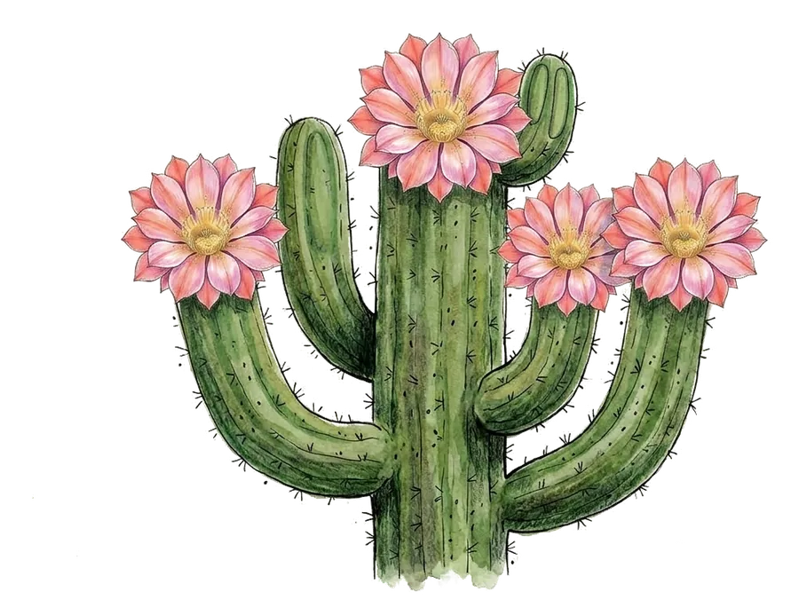
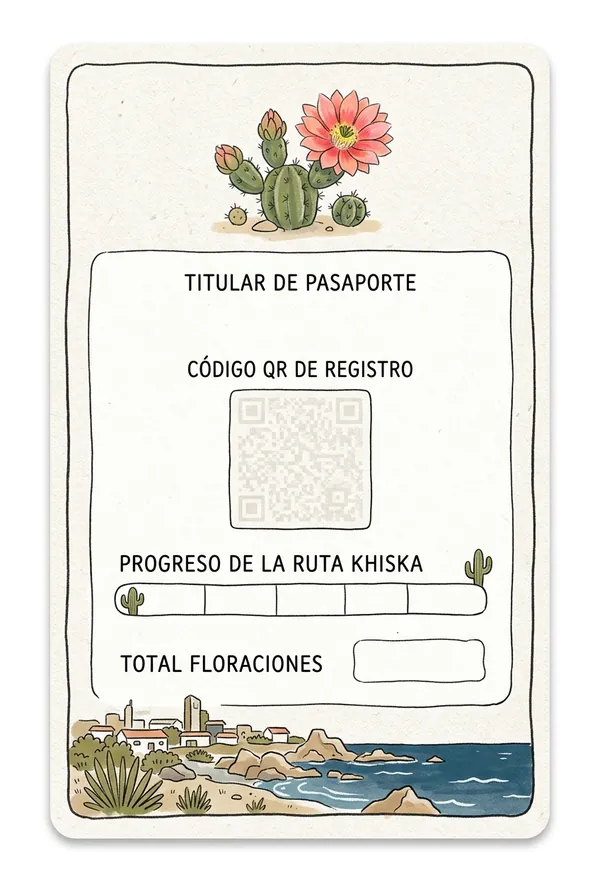

Experiencia Khiska
La curiosidad hecha recorrido.
No inventamos otro mundo: te invitamos a descubrir el que existe. Khiska es tu cactus, y registra lo que vives en El Quisco.

Una ruta.
Una flor.
Cada flor es una ruta completa. Varias flores no son etapas de un mismo camino: son lugares distintos que ya viviste.
- Explora una ruta. Elige por lo que te da curiosidad, sin crear cuenta.
- Completa la experiencia. Prepárala con su ficha y recórrela de principio a fin.
- Haz florecer tu Khiska. Al terminar, su flor se abre en tu cactus.
Pruébalo: así se abre una flor
 Capullo cerradoRuta por descubrir
Capullo cerradoRuta por descubrir- Apertura parcialRuta iniciada
 Flor abiertaRuta completada
Flor abiertaRuta completada
Capullo cerrado: la ruta todavía no empieza.

Pasaporte Khiska
Tu progreso es tuyo.
El Pasaporte guarda cada ruta que completas: un sello por recorrido. Sin rankings ni comparaciones.
Existe en el celular y en papel, para que nadie quede fuera por no usar smartphone.
Mi Khiska, en tu mano
En la app ves tu cactus, las flores que abriste y tu próxima ruta. También tiene lectura fácil.